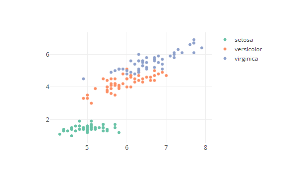

- Select a dataset you want to view
- Choose the properties you want to inspect
- Look at the data in the plot tab
- You change the variables on the fly to get a feel for the data
Jaco van der Plas
The plots can give you insight into the data set, for example you can the following plot for the iris data set:
plot_ly(x = iris$Sepal.Length, y = iris$Petal.Length,
color = iris$Species, type = 'scatter', mode = 'markers' )

Thanks for you attention, please feel free to contact me for questions and don't forget to use the dataset viewer